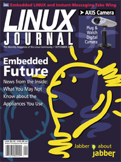

Submitters, send your News Bytes items in
PLAIN TEXT
format. Other formats may be rejected without reading. You have been
warned! As always, a one- or two-paragraph summary plus URL is preferred over
an entire press release.

 September 2000 Linux Journal
September 2000 Linux Journal
The September issue of Linux
Journal is on newsstands now.
This issue focuses on embedded systems. Click here to
view the table of contents, or here to subscribe.
All articles through December 1999 are available for
public reading at
http://www.linuxjournal.com/lg-issues/mags.html.
Recent articles are available on-line for subscribers only at
http://interactive.linuxjournal.com/.
Embedded Linux Journal
We're excited to introduce a Linux Journal supplemental issue
which will hit the streets October 10, 2000: Embedded Linux Journal. In
this upcoming special issue you can look forward to conversations about:
- Industry news emphasizing Open Source software solutions.
- Reviews of products to reduce development time and improve testing.
- Case studies that will save you time.
- Design solutions that show you why embedded Linux is the
cost-effective answer.
- Hardware vs. software considerations.
Current Linux Journal subscribers who live within North America will
receive this special supplement at no additional charge. This issue will
also be heavily distributed at upcoming trade shows, other industry events,
and to targeted mailing lists.
We hope you enjoy this special issue. We welcome feedback.
Distro News
Caldera
OREM, UT--July 25, 2000--Caldera Systems, Inc. today announced the
availability of the Linux 2.4 Technology Developer Release Preview. This
developer's preview enables early software development with a beta version of
the new Linux 2.4 kernel, Sun Microsystems' Java HotSpot technology and glibc
2.1.91, KDE 2.0 Development Snapshot with the Konqueror web browser.
Anchordesk UK's Evan Leibovitch did a
review of the product.
Caldera acquires SCO -- OREM, UT--August 2, 2000--Caldera
Systems, Inc. and The Santa Cruz Operation, Inc., (SCO), today announced that
Caldera Systems has entered into an agreement to acquire the SCO Server
Software Division and the Professional Services Division. The Professional
Services Division will operate as a separate business unit of Caldera, to
provide services to meet the Internet and eBusiness infrastructure needs of
customers. The new company will offer the industry's first comprehensive Open
Internet Platform (OIP) combining Linux and UNIX server solutions and services
globally. The OIP provides commercial customers and developers with a single
platform that can scale from the thinnest of clients to the clustering needs of
the largest data center.
OREM, UT and SANTA CRUZ, CA-July 18, 2000-Caldera Systems, Inc. , and
Tarantella, Inc. a wholly owned subsidiary of The Santa Cruz Operation, Inc.,
today announced the first bundling of Tarantella Web-enabling software in the
Linux space. This solution, Caldera OpenLinux Application Server with
Tarantella, provides centralized management and deployment of applications on a
fast, stable and low-cost platform simplifying IT responsibilities while
reducing business costs. OpenLinux Application Server enables authorized users
with a Java technology-enabled browser to run existing Windows, Linux and UNIX
applications through the company's local area network or remotely through the
Internet - even on a dial-up connection. In addition, companies can instantly
deliver new Web-based and existing legacy applications to their users without
code rewrites.
OREM, UT-July 18, 2000-Caldera Systems, Inc. today began
shipping its first computer-based training (CBT) product - Quick Start to
Linux. Quick Start is self-paced with hands-on, guided demonstrations
including the preparation of a Windows-based machine for a Linux
installation, the install itself and the navigation of Linux desktops. In
addition, Caldera's Quick Start CBT identifies business solutions using
Linux while providing historical Linux information.
RESEARCH TRIANGLE PARK, N.C. (July 25, 2000) - InterLan Technologies, a
managed server provider (MSP), announced today it has formed a
strategic alliance with Caldera Systems. InterLan selected Caldera to provide
the Linux operating systems in its state-of-the-art Internet Utility Center, as
well as for its QuickStart(tm) program, an industry-first program that gets
premium managed servers up and running the same day an order is placed.
Debian
Debian GNU/Linux 2.2, the "Joel 'Espy' Klecker" release.
The Debian Project is pleased to announce the latest release of the
Debian GNU/Linux Operating System. This release has been in
development for approximately 18 months, and has been extensively
tested by several thousand developers and end-users.
With the addition of the PowerPC and ARM architectures, Debian
GNU/Linux now supports a total of six architectures -- more than any
other distribution. Packages for all architectures are built from the
same source packages. Debian GNU/Linux now runs on iMacs and
Netwinders, and of course Intel PC's, Sun SPARCs, Alphas, and older
Macintosh and Amiga hardware are still supported.
Debian GNU/Linux 2.2 features a more streamlined and polished
installation, including automatic network setup via DHCP, a simplified
software selection process (just indicate the tasks your Debian
GNU/Linux system will be used for), and a simplified configurator for
the X Window System. Debian GNU/Linux can be installed via CD, or
from the network and a few floppies:
For detailed documentation about installing and upgrading
Debian GNU/Linux, please see
http://www.debian.org/releases/2.2/.
Debian GNU/Linux 2.2 is dedicated to the memory of Joel "Espy"
Klecker, a Debian developer who, unbeknownst to most of the Debian
Project, was bedridden and fighting a disease known as Duchenne
Muscular Dystrophy during most of his involvement with Debian. Only
now is the Debian Project realizing the extent of his dedication, and
the friendship he bestowed upon us. So as a show of appreciation, and
in memory of his inspirational life, this release of Debian GNU/Linux
is dedicated to him.
Kondara
KONDARA MNU/LINUX 2000 claims to be the first and only multilingual
distribution on a single binary. While other major Linux
distributions have multilingual support, you have to completely reinstall
Linux to switch to a new language. Kondara, on the other hand, lets you read,
write, edit and print in Japanese, English, Chinese, Spanish or over 40 other
languages all on the same desktop.
"One World, One Version."
Kondara also offers multi-platform
support on a single source code. Now users can make a single change to
the source code and have it affect both the Alpha and Intel platforms.
The kernel is 2.2.16
www.df-usa.com
Linux for Windows
INDIANAPOLIS, Indiana-July 18, 2000-Macmillan announces the update to their
popular Linux® for Windows® product is currently available in stores. With
this software, first-time Linux users can try the Linux environment without
losing the Windows® functionality that they are familiar with. Linux for
Windows 7.1 includes the Linux-Mandrake 7.1 operating system, most noted for
its ease of use and user-friendly tools.
The technology included with Linux for Windows 7.1 removes the need for
disk partitioning or reformatting, thus making an excellent gateway for new
users interested in Linux. Free 24-hour technical support is also provided via
Internet and fax for installation issues.
Lute
Argent Resources Ltd. has signed
an agreement dated July 12, 2000, with Lute Linux.com Corp. that
will result in Argent acquiring 100% control of Lute.
Completion of the transaction is subject to
shareholder approval on a majority of the minority basis, CDNX acceptance
and the resulting company meeting minimum listing requirements as a Tier
2, Category 3 Technology Issuer.
http://www.argentresources.com/news/071200.asp
LuteLinux.com has been voted site of
the month by InternetBrothers.com in
the Helpware and Community category. According ro InternetBrothers.com, the
main crieteria for this honour is a "sound functional interface".
InternetBrothers.com strongly believes that "A primary key to any successful
web site is the user interface."
Features that make LuteLinux exceptional are their commitment to the Linux
community, and their fostering of interactive information exchange with
that community. They also provide useful tips and information for the
non-Linux user, helping to open Linux up to a wider
audience. LuteLinux.com is committed to bringing Linux knowledge to the
businessman, hobbiest, and newbie alike.
Mandrake
San Jose, August 14, 2000 - MandrakeSoft, announced that Linux-Mandrake,
has been ported to Sun Microsystems' SPARC(tm) and UltraSPARC(tm) platforms.
Based on the Linux-Mandrake 7.1, the Corporate Server 1.0 provides all the
tools needed to rapidly and easily set up the main server functions. WizDrake
assistants will additionally guide the user in setting up a full range of
services and applications like e-mail, Web servers, firewalls and routers.
Progeny
Progeny Linux
Systems is a new company headed by Ian Murdock (Debian founder) and
Bruce Perens (former Debian head guy).
Progeny is doing two things:
a.) Progeny Debian - a stripped down version of Debian with some
improvements like the installer, based on extensive testing of
the latest version. Progeny Debian will have limited circulation
in pre-loads, downloads, and (probably) with third party
companies. Progeny won't be selling it directly in the stores,
although the third parties might be. Basically, Progeny Debian's
main use will be as a basis for Linux NOW.
b.) Linux NOW (Network of Workstations) - an Open Source product.
More information can be found at
http://www.progenylinux.com/news,
and in the
/debian and
/now pages.
Debian Founder Launches Commercial Company
(Linux Magazine article)
Red Hat
RESEARCH TRIANGLE PARK, N.C.--July 10, 2000--Red Hat, Inc. today announced
the Red Hat High Availability Server 1.0, a specialized version of
Red Hat Linux 6.2.
Red Hat High Availability Server is an out-of-the-box clustering solution
that delivers dynamic load balancing, improved fault tolerance and scalability
of TCP/IP based applications. It lets users combine individual servers into a
cluster, resulting in highly available access to critical network resources
such as data, applications, network services, and more. If one server in the
cluster fails, another will automatically take over its workload.
The Red Hat High Availability Server has built-in
security features designed to withstand common attacks. Systems Administrators
can setup sand traps, providing for redirection of IP traffic from a potential
attacker to a secure address. Out of the box, finger, talk, wall, and other
daemons are disabled or not installed. In addition, multiple traffic routing
and scheduling techniques along with virtual IP addresses allow you to create a
security barrier for your network.
Rock
Rock Linux is a distribution that's "harder to install" than the others.
There, did that get your attention? If so, Rock Linux may be for you.
It aims to be "sysadmin friendly" rather than "user friendly", to get out of
the way as much as possible from between you and your applications. This
means you configure the system using Unix's traditional command-line
interface and shell scripts. Oh yes, X-windows is included.
Serious geeks will love the fact that you get to compile your own
distribution (optionally putting it on a CD) before installing it.
http://www.rocklinux.org
http://e-zine.nluug.nl/pub/rock/GUIDE.html
[I'd really like to see an article or some Mailbag items about
people's experience with this. Has anybody tried it? -Ed.]
Slackware
Slackware 7.1 is out at www.slackware.com and mirrors.
Storm
VANCOUVER, British Columbia--Stormix Technologies Inc., announces the
launch of Storm Linux 2000 Starter Edition.
The Storm Linux 2000 Starter Edition provides Windows® users who want to
try Linux with a full featured, easy-to-install distribution at a low
cost. This new product is intended for people who want to easily access
the power of Linux without an abundance of third party software.
The Storm Linux 2000 Starter Edition is the first member of the Storm
Linux 2000 family based on Debian/GNU Linux 2.2 ("Potato").
The Duke of URL has a
review of
Storm Linux 2000.
August 10 -- Vancouver, British Columbia -- Stormix Technologies Inc.,
today announced the launch of Storm FirewallTM, a flexible, scalable network
security solution targeted at small office and home office (SOHO) users.
Storm Firewall is the first in a line of dedicated network products from
StormixTM. Capitalizing on the natural protective features of Linux, it
is one of the most powerful tools available for network protection.
Storm Firewall uses a graphical user interface to simplify the once
complex process of installing a Linux firewall. The choice of simple
options or advanced setup gives users ultimate control over network
traffic. In addition, users will benefit from IP masquerading which
allows for multiple computers to share a single Internet connection.
VANCOUVER, British Columbia - User Friendly Media Inc. and Stormix
Technologies Inc. today announced an agreement for the sponsorship of the
inaugural three month's publication of an online interactive newsletter for
fans of the popular UserFriendly.org IT Web site.
The e-mail newsletter, known as
The Static
Cling, offers subscribers access to several exclusive features, including
unique cartoons and artwork, a trivia contest with prizes and links to a
threaded comment section. UserFriendly.org is the leading online entertainment
and community destination for the global IT community.
www.stormix.com
SuSE
The German version of SuSE Linux 7.0 is out. The English version will ship
in September.
English version: http://www.suse.com
German version: http://www.suse.de/
http://www.suse.de/de/produkte/susesoft/linux/index.html
Trustix
We are proud to announce the release of Trustix Secure Linux 1.1. You can
download it at:
http://www.trustix.net/download/
or directly from
http://www.trustix.net/mirrors.php3.
This is primarily a maintainence release, but some new features like
database support and improved mail filtering have been added. In addition
we've added Lynx with SSL support and various other utilities to simplify
the every day maintainance of your server.
Trustix Secure Linux is a Linux distribution aimed towards the server
market.
For a more complete list of features, please see
http://www.trustix.net/products/trustix-1.1/
Unix phoenix. On Unix openness, Unix history, and Linux.
Another Anchordesk UK article by Evan Leibovitch.
News in General
Upcoming conferences & events
O'Reilly's conference next year on emerging enterprise-class Java
applications has a call for papers.
Submission deadline is September 15, 2000.
Linux Business Expo
(co-located with Networld +
Interop event)
|
September 26-28, 2000
Atlanta, GA
www.key3media.com/linuxbizexpo
|
Atlanta Linux Showcase
|
October 10-14, 2000
Atlanta, GA
www.linuxshowcase.org
|
ISPCON
|
November 8-10, 2000
San Jose, CA
www.ispcon.com
|
Linux Business Expo
(co-located with
COMDEX event)
|
November 13-17, 2000
Las Vegas, NV
www.key3media.com/linuxbizexpo
|
USENIX Winter - LISA 2000
|
December 3-8, 2000
New Orleans, LA
www.usenix.org
|
LinuxWorld Conference & Expo
|
January 30 - February 2, 2001
New York, NY
www.linuxworldexpo.com
|
$399 Linux computer with monitor
July 17, 2000- Introducing the PortalPC, our new solution to the computing
and networking market. After thorough development and extensive
testing, we are proud to bring to the consumer this revolutionary new product.
The unique design of the PortalPC gives the users numerous options and
versatility with their computing needs without the expense. With a starting
price of $149.99, this computer is a perfect base for all of the functions a
traditional PC can provide. Complete packages that include CD-ROM, Floppy,
4.3GB HD, 15 Monitor, 32 Mb PC100 Ram, Keyboard, Mouse and free copy
of Red Hat 6.2 start at $399.99. The on-board technology includes, 10/100
network card, Dual USB, PS/2 port, Parallel port, Com port, VGA display, Disk
On Chip Socket 8 to 144Mb and PC/104 16BIT Expansion Connector. This unique
configuration enables the PortalPC to be uniquely small (approximately
12x5x9).
Using the PortalPC to build your private network, you can have 6 workstations
at the cost of a traditional tower computer.
www.portalpc.net
Linux Square
ITsquare.com is pleased to announce the launch of Linux Square, a
supplement to the existing b2b marketplace for IT services at
http://www.ITsquare.com/. Linux Square
provides access to scores of established Linux development firms. Through use
of a web-based framework, clients are able to securely and efficiently procure
the development of Linux applications.
MaxSQL
Helsinki, Finland and Carlisle, Massachusetts, USA--August 9,
2000--MySQL AB and Sleepycat Software, Inc. today announced the release
of MaxSQL, a new Open Source, high performance, and fully transactional
SQL server. MaxSQL, developed jointly by the two companies, combines the
industry-standard interface of MySQL's data access language with the
high-performance transaction services of Sleepycat’s Berkeley DB.
MaxSQL is available immediately via download at no charge from
www.maxsql.com.
MaxSQL is the first Open Source relational database engine to offer the
reliability, scalability, and performance that commercial users demand.
The software provides the ability to perform transactions with full
recoverability for committed changes. It manages databases up to 256
terabytes in size, accommodates many concurrent users, and survives
power failure or system crashes without losing data. Those features,
combined with MySQL's enormous popularity make MaxSQL a potent threat in
the SQL marketplace.
The full source code for MaxSQL is available for download at www.maxsql.com. The software is distributed
under the GNU Public License (GPL).
The Napster battle has implications for free-software
developers
Salon article: "As the long arm of the law reaches Napster and its
lookalikes, programmers could be held responsible for what others do with their
code."
"Free speech, copyright, piracy and the fundamental nature of source code --
ever since the Internet began its surge to cultural and economic prominence,
these concepts have swirled around each other in a confusing and contradictory
morass. Now, in courtrooms from coast to coast, judges are attempting to bring
order to the burgeoning online chaos. And from the first indications,
programmer freedom may end up coming under the most sustained assault yet
seen."
"We are on the verge of defining software and determining the responsibility
of software developers to control the uses of their work."
http://salon.com/tech/feature/2000/08/07/yoink_napster/index.html
Linux Brains Sought for New Tech Support Site
August 15, 2000, Vancouver, BC --
IQLinux.com has launched a new
technical support website for the global pool of independent Linux
experts to meet the support need of Linux users.
"IQLinux.com is a combination of Ebay and Onvia.com for the Linux
community. The site's potential is like a rocket and I encourage
Linux enthusiasts to take a ride", said Mark Kuharich, publisher and
editor of Softwareview.com.
IQLinux.com membership is free. The site's seamless negotiation
process fully manages the negotiation of open source products and
their supporting services.
IQLinux.com's combined features make it a unique opportunity for the
Linux community to interact. It allows members to easily form
business relationships, manage virtual consulting teams, negotiate
agreements and contracts, set prices, define deliverables and carry
out technical support transactions, while being assured of payment.
Overseas internships for Canadian nationals
Hello from Ottawa. I am the recruiting officer for NetCorps Canada with
Voluntary Services Overseas (VSO Canada). Currently I have 2 6-month
internships open to Canadian citizens or landed immigrants between the ages
of 19-30 to go overseas in September. On is for a linux administrator to go
to Jamaica for 6 months, the other is for someone with e-commerce skills to
go to Guyana for 6 months.
Interested applicants should forward their CV and brief cover letter to
Wendy Street, NetCorps Program Officer, VSO Canada. Applicants who are accepted
need to be prepared to leave no later than
September 20th, 2000.
wendys@vsocan.com, fax: +1 (613) 234-1444, http://www.vsocan.com
"Dilbert Killer" on-line games
User Friendly Media Inc., and SuSE Linux announced the launch of the first
in a series of challenging and diverse on-line games currently under
development for the new game section on
UserFriendly.org.
"This first game focuses on geek trivia and allows our very intellectual
audience to compete head on in a variety of challenging information
categories. The combatants move up the pyramid until there is only one...
there can be only one", said Wildcard, lead coder for User Friendly Media
Inc. and creator of "Pyramid of Trivia".
The site also has an
animated cartoon series
now. This caused technicians to scramble for 300 GB of additional bandwidth
for the debut. (Requires Flash player; episode 1 is 2.5 MB / 7 minutes.)
Linux Links
The age of cyborgs is coming closer.
"Scientists are attempting to create
molecular electronic
circuits using DNA. They say that they could potentially create circuits
10,000 times smaller than with current technology." Yahoo via Slashdot.
www.linuxlookup.com is "Your
Source For Reviews, HOWTOs, Guides & Gear".
A searchable
distribution database.
SiliconPenguin.com is an index
of information on embedded Linux. The information is not gathered by web
spiders, but by humans who evaluate each link.
LinuxLinks.com now has a web-based
calendar.
The Duke of URL articles:
Linux laptop info.
Another laptop page.
(Turn off Java for the second one to avoid Geocities popups.)
Sony plans a notebook computer with Transmeta's Crusoe chip and a digital
camera by year's end.
http://news.cnet.com/news/0-1003-200-2523739.html
Linux Means Business
is a collection of articles on how businesses can make use of
Linux.
Hardware-Unlimited has lots
of reviews about video cards and other hardware. Includes a price comparision
guide of graphics cards and dealers.
Here's a review of the D-Link MP3 player.
How
Linux's falling stock prices
are only temporary. (Anchordesk UK article by Charles Babcock)
Complete Reference Guide to Creating a Remote Log Server.
LinuxSecurity article. Note that this is "log" in the sense of "logging error
messages to a file", not "logging in remotely".
The Right to
Read by RMS is a short science-fiction story about the implications of
widespread anti-piracy measures on electronic books.
www.wininformant.com is a
source of information on Microsoft's activities. The site has a pro-MS bent,
but is honest about MS's shortcomings. One article the persistent rumor that MS
is
porting Office applications
to Linux, which the company denies it is doing. Meanwhile, CNET news.com
attempts to
sort out the rumors.
Software Announcements
FIASCO
I am pleased to announce the first public release of FIASCO.
FIASCO is an image and video compression system for low bit-rates
based on fractal coding which outperforms the well known JPEG and MPEG
standards. License GPL.
FIASCO consists of command line applications (like cjpeg/djpeg) to
encode images and videos and to decode and display generated FIASCO
streams. Moreover, library functions are available for reading and
writing FIASCO files.
http://ulli.linuxave.net/fiasco
Other software
Linux
for Astronomy is precompiled astronomical software.
SMSLink 0.48b-2
implements a client / server gateway to the SMS protocol
(the short messages sent to mobile phones). This version is mostly a bugfix
release. License GPL.
Corel PHOTO-PAINT is a
photo-editing, image composition and painting application, now
available for free download.
Metrolink has released Open Motif
with Metro Link's enhancements and bug fixes, available for FTP download.
Sun's StarOffice 5.2 office
suite is available for download in eleven languages.
Proven CHOICE Accounting
is a complete business accounting system for Linux. New is the time billing
module.
CRYPTOAdmin 5.0 protects Apache,
iPlanet and Microsoft IIS Web servers from unauthorized access - right down to
the page level. The new feature, WEBGuard, ensures access to protected pages
is only permitted with the correct one-time challenge/response generated from a
CRYPTOCard hardware or software token. Web severs communicate directly with
CRYPTOAdmin, enabling ASP (Active Server Page) or JSP (Java Server Page)
security. CRYPTOAdmin is included with industry leading products such as Cisco
Secure ACS and Red Hat Linux at no charge. Established in 1989, CRYPTOCard is
a Canadian company based in Kanata, Ontario.
Servtec's iServer is now available
for Dallas Semiconductor's TINI board, an embedded Internet computer. iServer
TINI Edition is a full featured Application/Web Server written entirely in Java
running on TINI. 90-day free preview.
Perl Builder 2.0 is a
major upgrade to Solutionsoft's Perl IDE. Includes a CGI Wizard, debugger, and
the ability to test CGI scripts on the desktop. 14-day evaluation copy
available for download. (Note: "no route to host" error during final
proofreading.)
Helios PDF Handshake 2.0 is in beta. It allows PDF documents
to be created remotely via a "Create PDF" print queue. A print preview queue
is also available.
The Linux Arabization project
announces Aedit, an Arabic editor that supports bidirectional text and features
specific to the Arabic language. Aedit is meant to be an international editor
with support to other languages. Aedit is based on the internationalization
support available in Gtk+-1.3. License GPL.
Mainsoft has a porting application
that turns Windows Code into native Unix.
Loki news: Loki will maintain and support the Linux version of Unreal
Tournament by Epic Games, Inc. Loki has also teamed up with
BSDI to ensure Loki's games run on FreeBSD using its Linux-compatibility
features. Certified games will be fully supported by Loki.
Intel's Universal Plug and Play (UPnP) Software Development Kit (SDK) 1.0 is available through an
open-source license.
Magic Software news: Magic announced
support for mobile e-business (mBusiness) in its web applications eService and
eMerchant, allowing them to support remote transactions via the Wireless
Application Protocol (WAP). Magic also announced an intention to acquire
CoreTech Consulting Group, Inc., a provider of e-business professional services.
This will enhance Magic's ability to offer consulting and professional services
in North America.
PerlMX
embeds Perl in Sendmail as a mail filter engine. This allows you to use Perl
code for spam control, keyword scanning, custom routing, etc.
By ActiveState.
CURSEL is a freeware FMLI (Forms
and Menu Language Interpreter) implementation for Linux and UNIX. CURSEL
interprets Menu description files, which are simple text files, describing a
character GUI (Menus, forms, text files) for character terminals (xterm, vt100,
etc.). Pipes, shell escapes, backquoted expressions, and file redirection are
supported, and when compiled with ncurses 5, CURSEL supports color. CURSEL
also supports coroutines, and descriptors to create, send data, or receive
data, from an another process via named pipes. License GPL.
This page written and maintained by the Editors of the Linux Gazette.
Copyright © 2000, gazette@linuxgazette.net
Published in Issue 57 of Linux Gazette, September 2000

![[ Prev ]](../gx/navbar/prev.jpg)
![[ Table of Contents ]](../gx/navbar/toc.jpg)
![[ Front Page ]](../gx/navbar/frontpage.jpg)
![[ FAQ ]](./../gx/navbar/faq.jpg)
![[ Next ]](../gx/navbar/next.jpg)